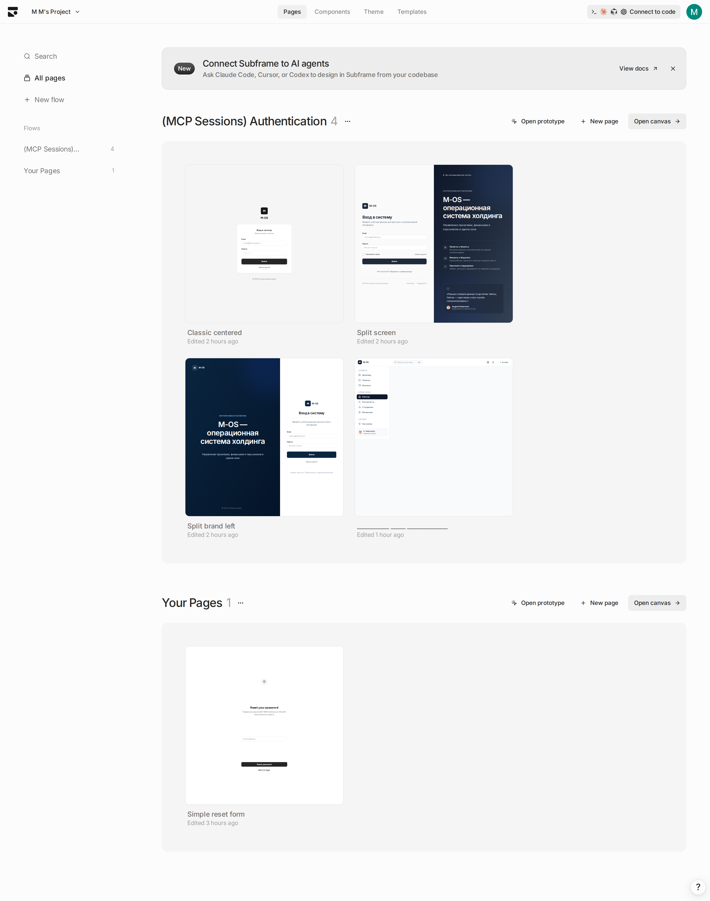

M-OS · Все экраны · Снимок Subframe
Статический снимок списка всех страниц проекта Subframe. Обновляется по мере появления новых экранов.
← Карточки
Открыть в Subframe ↗
Снимок:
2026-04-22 14:05 UTC
·
Источник:
app.subframe.com/aeedf49f14a6/playground
·
Проект:
M M's Project (Pro) ·
Режим:
«Черновик» — все новые экраны попадают сюда
